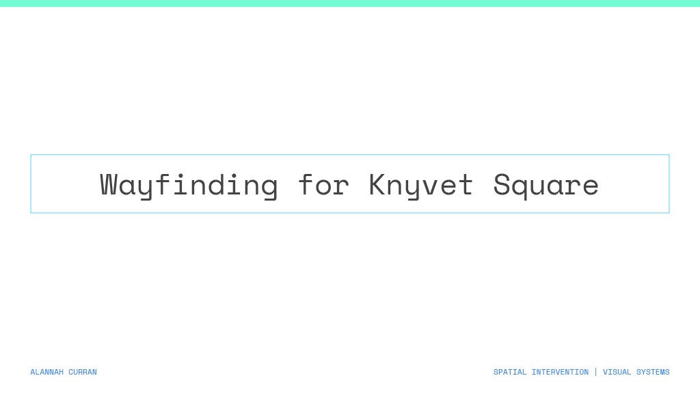
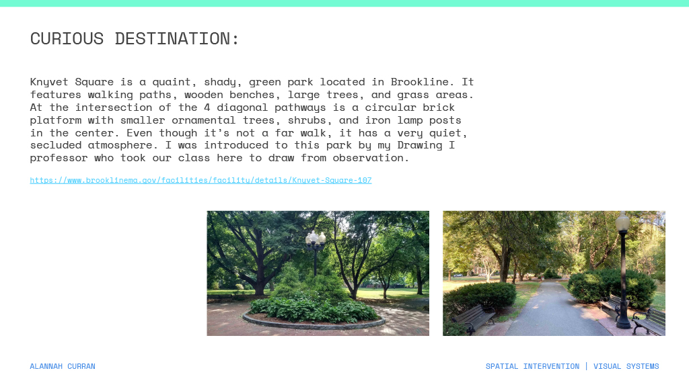
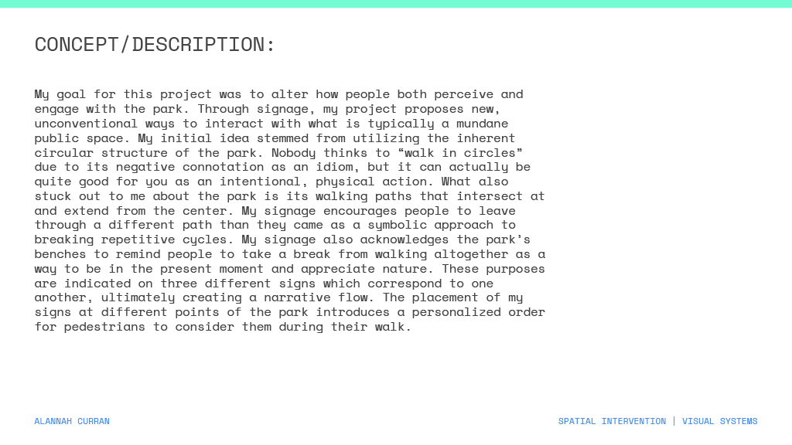
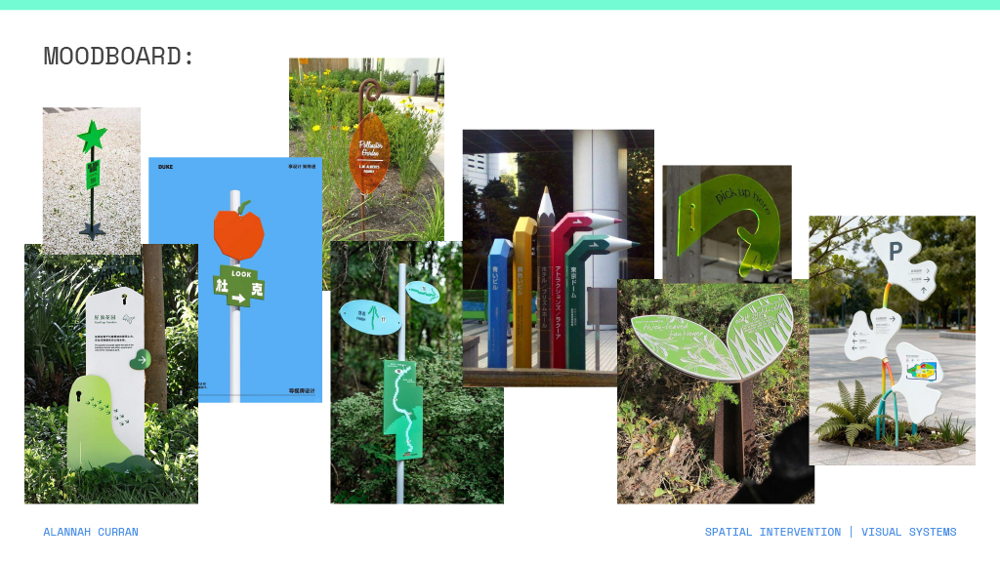
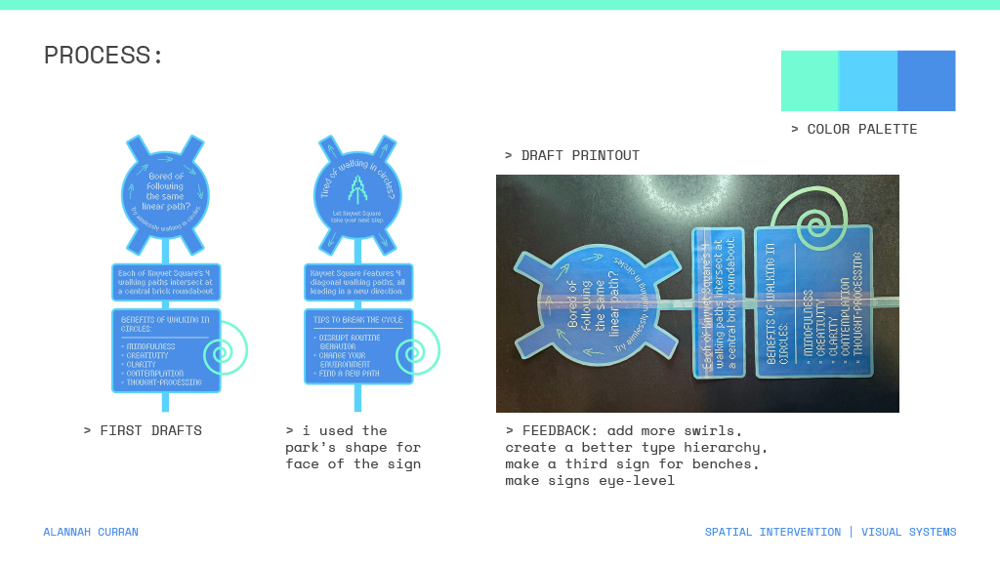
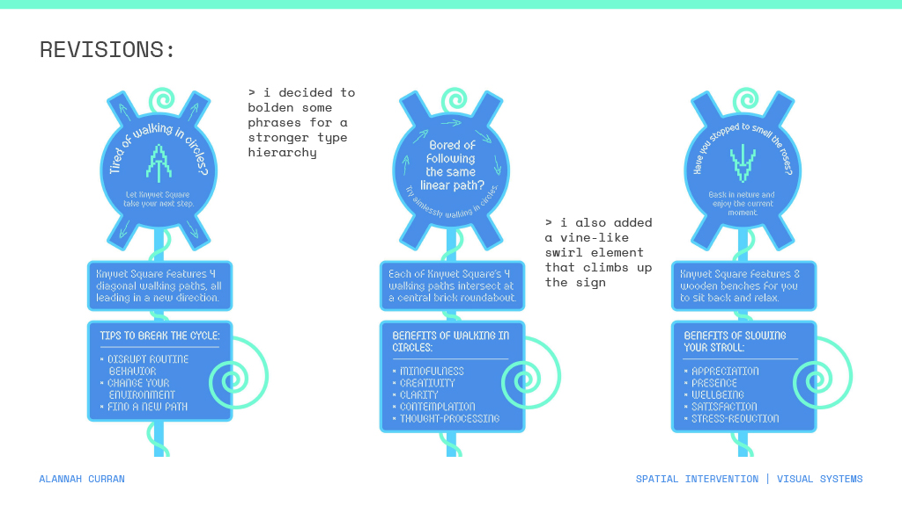
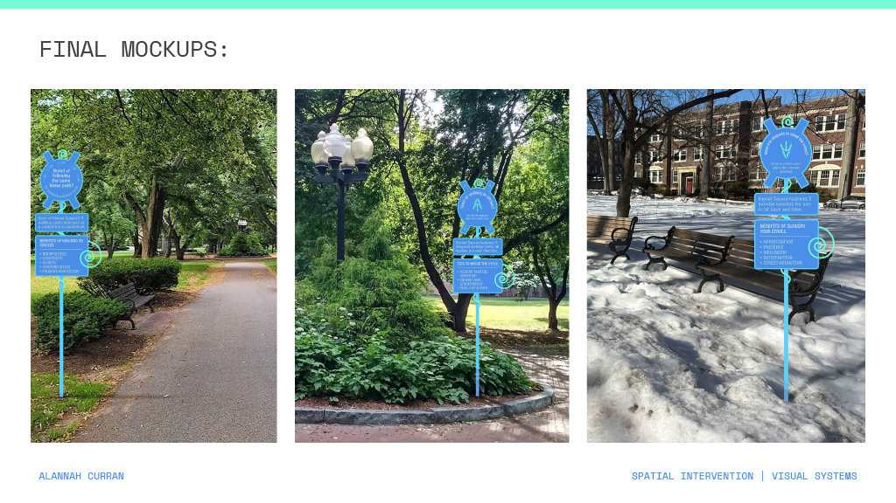

My goal for this project was to alter how people both perceive and engage with the park. Through signage, my project proposes new, unconventional ways to interact with what is typically a mundane public space. My initial idea stemmed from utilizing the inherent circular structure of the park. Nobody thinks to “walk in circles” due to its negative connotation as an idiom, but it can actually be quite good for you as an intentional, physical action. What also stuck out to me about the park is its walking paths that intersect at and extend from the center.
My signage encourages people to leave through a different path than they came as a symbolic approach to breaking repetitive cycles. My signage also acknowledges the park’s benches to remind people to take a break from walking altogether as a way to be in the present moment and appreciate nature. These purposes are indicated on three different signs which correspond to one another, ultimately creating a narrative flow. The placement of my signs at different points of the park introduces a personalized order for pedestrians to consider them during their walk.






